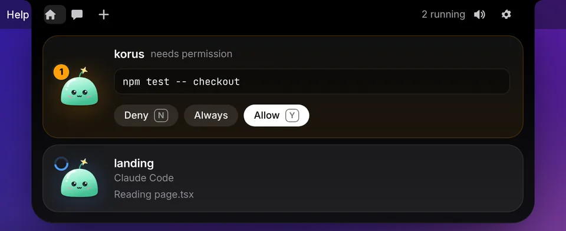
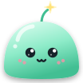
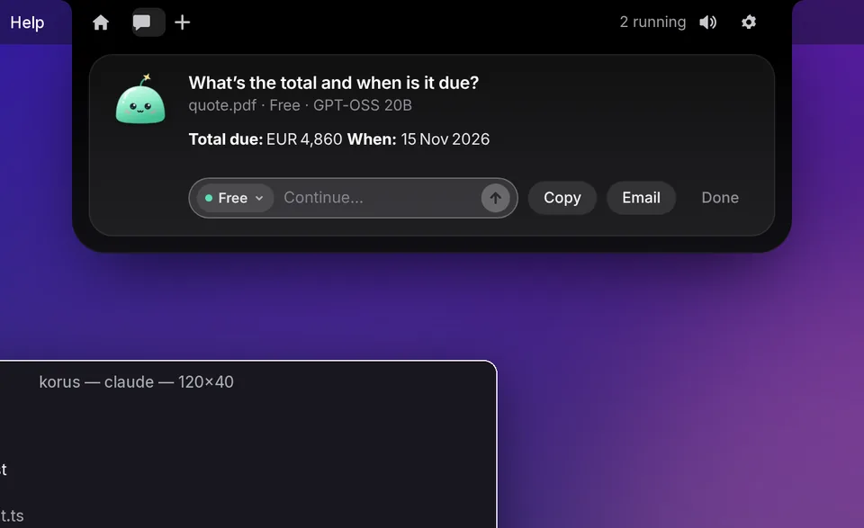
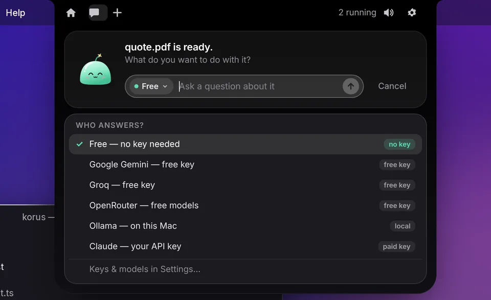
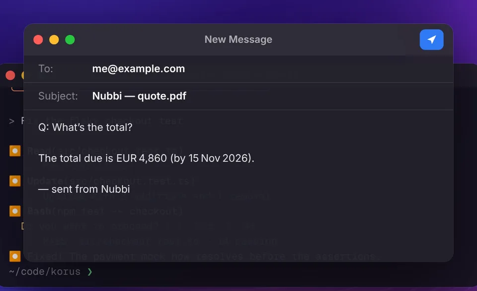
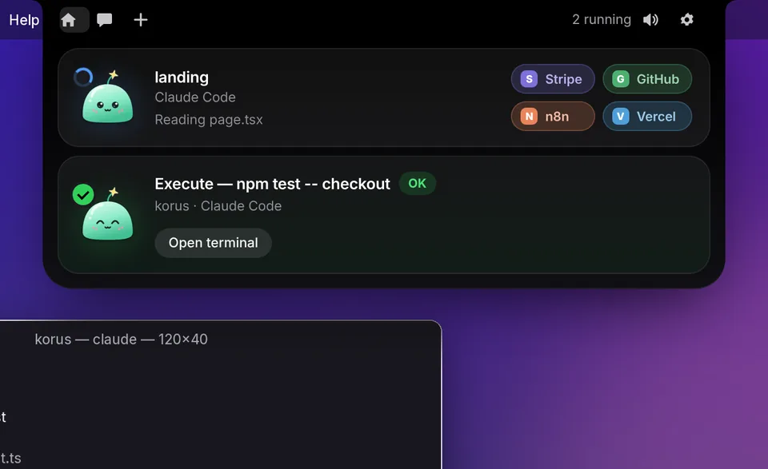
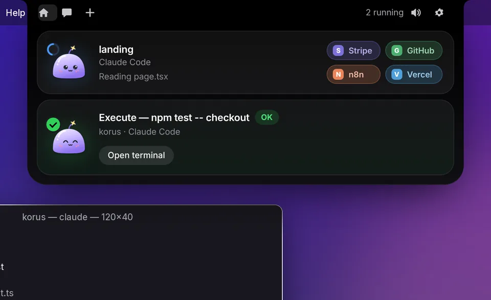
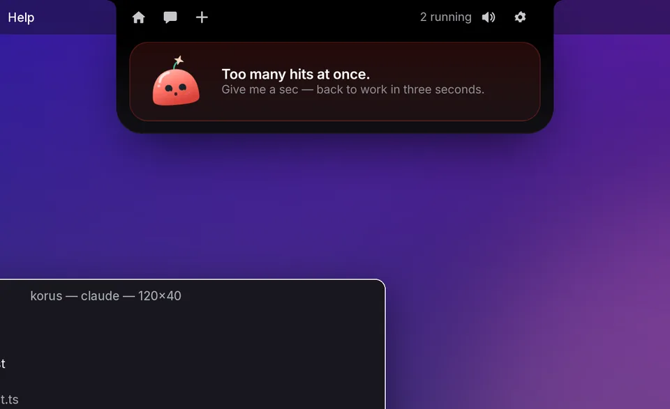

Approve Claude Code in one click
When Claude wants to run a command or edit a file, Nubbi pops down with Allow, Deny or Always. Press Y, N or A and get back to work.


Nubbi DownloadFree for Mac · v3.0.1
Nubbi watches your Claude Code sessions, lets you approve in one click, and answers questions about any file you drop on it. Free AI is built in — no account, no setup.
For Apple Silicon (M1–M4) · 118 MB · macOS 13+
Nubbi is a Mac app — open this page on your Mac to download it.
npm test -- checkout✓ 14 tests passing — checkout fixed.
What's the total and when is it due?
EUR 4,860 — due 15 Nov 2026.
Psst — try poking Nubbi.
What it does
Everything happens right under your camera — so you never lose your place.
When Claude wants to run a command or edit a file, Nubbi pops down with Allow, Deny or Always. Press Y, N or A and get back to work.

Drag a PDF, photo, spreadsheet or code file onto the notch and ask what you want to know.

Works out of the box with a free community AI. Or bring your own: GeminiGroqOpenRouterOllamaClaude

One click opens a ready-to-send email in your mail app with the question and answer filled in.

Running Claude in several projects? Each session gets its own row with live status.

Pick Nubbi's colour. Mint, lilac, peach, sky — or snow.

There's a little easter egg. Click Nubbi a bunch of times and see what happens. (Be gentle.)

Install
Click Download for Mac. Your Mac unzips it into Nubbi.app in Downloads.
Open Finder and drag Nubbi.app into your Applications folder.
The first time only, right-click (or Control-click) Nubbi and choose Open, then Open again.
Why the extra step? Nubbi is a free hobby app and isn't signed with a paid Apple developer certificate, so macOS asks you to confirm once. On macOS 15 Sequoia or later, if there's no Open button: go to System Settings → Privacy & Security, scroll down and click Open Anyway.
Then look up — Nubbi says hi from your notch. Press ⌃⌥Space to open it any time.
curl -fL "https://github.com/mustafakijai/nubbi/releases/download/v3.0.1/Nubbi-3.0.1-mac-arm64.zip" -o /tmp/Nubbi.zip && rm -rf /tmp/Nubbi && ditto -xk /tmp/Nubbi.zip /tmp/Nubbi && rm -rf /Applications/Nubbi.app && mv /tmp/Nubbi/Nubbi.app /Applications/ && open /Applications/Nubbi.appDownloads the right version for your Mac, puts it in Applications and opens it — no right-click needed.
Privacy
API keys you add are encrypted with macOS Keychain on your Mac. They're never sent anywhere except the provider they belong to.
No sign-up, no analytics, no ads. Nubbi only talks to the AI service you pick, when you ask a question.
The built-in free option uses Pollinations, a community-run service. It's great for everyday questions — for private documents, use your own key or Ollama.
With Ollama, everything runs on your own Mac. Nothing leaves your computer at all.
FAQ
Yes. The app is free and the built-in AI is free. If you want faster or smarter answers, you can add your own key for Gemini, Groq, OpenRouter or Claude — some of those have free tiers too.
Any Mac running macOS 13 Ventura or later — Apple Silicon (M1, M2, M3, M4) and Intel. Not sure which you have? Click the Apple menu → About This Mac: “Chip: Apple M…” means Apple Silicon, “Processor: Intel” means Intel. No notch? Nubbi sits neatly at the top centre of your screen instead.
No. The file questions, email answers and the free AI work on their own. If you do use Claude Code, Nubbi connects to it automatically on first launch (it backs up your Claude settings first and never overwrites your own hooks).
PDFs, images and screenshots, text and Markdown, code, CSV, and Word, Excel and PowerPoint files. Drop several at once and ask about all of them.
That message appears for any app that isn't signed with a paid Apple certificate. Use right-click → Open, or on macOS 15+ System Settings → Privacy & Security → Open Anyway. You only need to do this once.
Claude Code carries on exactly as normal — Nubbi steps aside instantly and never blocks your work.
Click Nubbi in the menu bar → Quit, then drag Nubbi from Applications to the Trash. To also remove its Claude Code connection, open Nubbi’s Settings → Hooks → Remove before deleting.
No — Nubbi is an independent hobby project. It's inspired by Coucou by Louis Raillé (MIT licence).
Free for Mac. Takes a minute.
Download for Mac — FreeFor Apple Silicon (M1–M4) ·